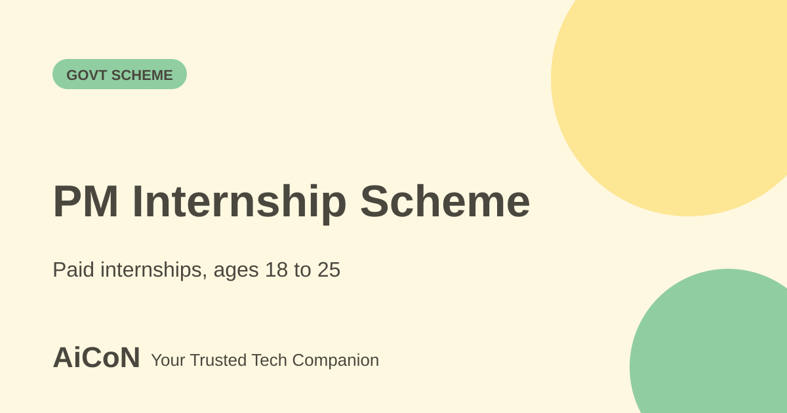

PM Internship Scheme: paid internships for youth 18-25
The Prime Minister Internship Scheme (PMIS) places young Indians in paid internships with partner companies. The pilot is in its third round, and companies keep posting openings. Registration is free.

What is PMIS?
The Ministry of Corporate Affairs runs the pilot phase of the Prime Minister Internship Scheme. A PIB release dated 22 April 2026 says more than 300 companies have taken part, and that the third round is underway with companies posting opportunities on an ongoing basis.
Who can apply?
- Youth aged 18 to 25 who are not in full-time employment.
- Not in full-time education. Online or distance learners can apply.
- Since April 2026, final-year graduate and postgraduate students can apply too, with a No Objection Certificate (NOC) from their institution confirming the internship will not interfere with studies.
The guidelines also exclude graduates from IITs, IIMs, National Law Universities, IISERs, NIDs, IIITs and IISc; holders of specified professional or higher qualifications such as MBA, CA, MBBS or PhD; certain government training participants and past NATS/NAPS trainees. A family member with income above ₹12 lakh in the preceding financial year or a permanent government job also makes the applicant ineligible. Family means the applicant, parents and spouse. Read the full current guidelines and each listing before applying.
What do interns get?
PIB says interns receive a minimum financial assistance of Rs 9,000 per month. The official pilot-extension guidelines hosted by UGC confirm a ₹6,000 incidental grant in two ₹3,000 payments and life/personal accident insurance equivalent to PMJJBY and PMSBY. Monthly assistance has a ₹900 company share and ₹8,100 government share; attendance and company rules can affect the paid amount.
How to apply, step by step
- Open pminternship.mca.gov.in. Type the address yourself.
- Register with your details and verify your mobile number.
- Complete your profile: education, skills, location and sector interests.
- If you are a final-year student, get the NOC from your college and keep it ready.
- Browse internship listings. New ones appear as companies post them.
- Apply to the ones that fit and track your status on the portal.
| Registration | Free, per the official announcements. Do not pay anyone for a place. |
|---|---|
| Pay | Minimum Rs 9,000 a month, per PIB. |
| Length | New internships are six or nine months under the extension guidelines. Existing pilot interns retain 12 months; check the listing. |
What changed since the short post?
Current official pilot-extension guidelines confirm ₹9,000 monthly assistance, a ₹6,000 grant paid in two parts, and six- or nine-month internships for new opportunities. Existing pilot interns retain the 12-month duration. Extra eligibility exclusions still apply.
Frequently asked questions
Can I apply while studying?
Only if you are an online or distance learner or in your final year of a full-time degree with an NOC.
Is it a job?
No. It is an internship, with no promise of a job.
Is there an age limit?
Yes, 18 to 25.
Sources: Official pilot-extension guidelines hosted by UGC (PDF), PIB: final-year students can apply to PMIS, PMIS portal. Checked 6 October 2026.